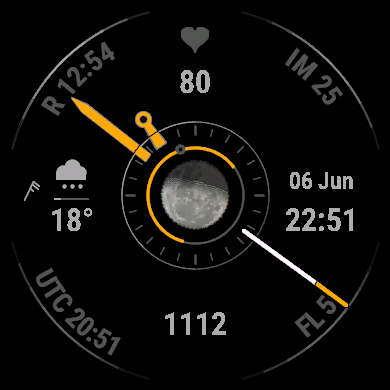

A photographic Moon at the center of an analog face — phase-shaded and tilted to match your sky.

Moonkey is built around a real photograph of the Moon, shaded for tonight's exact phase and rotated to the true inclination it shows in your sky — the terminator tilts the way the real Moon does for your latitude and the time of night, not as a generic icon. A thin ring hugging the disc traces the Moon's time above the horizon, from moonrise to moonset. All of it is computed on the watch, no internet required, and tracks published almanacs to within a few minutes.
Everything an analog face should be, with an astronomer's attention to the sky above it.
Soft-terminator shaded for the live phase and tilted to your sky's true inclination (bright-limb position angle minus parallactic angle).
A thin ring around the disc shows the Moon's span above the horizon for your location.
Midnight at top, noon at bottom; an amber arc spans daylight (sunrise to sunset) with a current-time pointer and a sun ring that brightens toward solar noon.
Hour is a tapered baton ending in an open ring, minute a tapered lance, second a white shaft tipped in amber — told apart by shape, not just length.
A clear / cloud / rain / snow / storm / fog glyph, temperature, a precipitation-chance bar, and a meteorological wind barb.
Keeps its colors in low-power mode but dims the battery-hungry detail to protect the display.
Five complication slots plus colors and a world clock — configure on the watch (fēnix 8 / MARQ 2) by tapping the field, or from Garmin Connect.
Pick an accent color and a separate data color for the readouts.
A second timezone for the corner field, with automatic daylight saving.
Five fields you choose: heart rate, steps, calories, body battery, intensity, floors, altitude, sunrise/sunset, and more.
AMOLED Garmin watches, minimum Connect IQ 4.2.1.